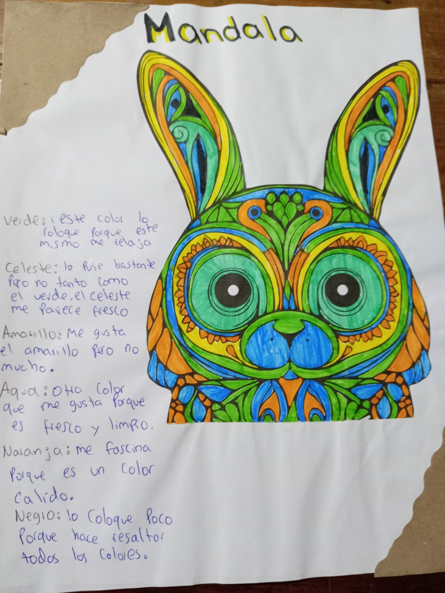

2010: le quitaron la patria potestad a mi madre de mis hermanas y mia.
2014: me bautizaron.
2014: comence a estudiar primero primaria.
2015: hice mi primera comunion.
2017: mi madre fallecio.
2020: comence los basicos.
2022: comence a llevar en hombro las procesiones.
2024: me fracture el nudillo.
FAMILIA
Luis Oswaldo Garrido Salazar (50 años) tio: Me apoya economicamente,emocionalmente.
Lesly Maritza Reyes Garrido (25 años) hermana: Me escribe diario y me motiva.
Saturnino De Jesus Reyes Pineda (80 años) abuelo: Me da muchos animos para seguir luchando por mis sueños.
Andrea De Jesus Garrido Secaida (80 años) abuela: Cuando la llamo por telefono me motiva y me dice que siga adelante.
CREENCIAS
Creo en Dios y en la relgion catolica,me gusta mucho esta religion porque yo hago la penitencia en semana santa desde que salen hasta que entran los cortejos.
MANDALA

SIGNIFICADO DE MI NAHUAL
Familia, comunidad, grupo, sociedad, reunión, país, continente, todo lo que se agrupa. Día de la comunidad, de lo general a partir de la individualidad. Simboliza la relación de grupo y el eterno retornar de la vida de la generación futura como familia, descendencia. La sociedad, la aldea, el pueblo, el país, el continente, el planeta, el sistema planetario, la galaxia, el universo, la expansión. Las pruebas a vencer son lo drástico, la intolerancia, la imposición, el orgullo y el egoísmo.